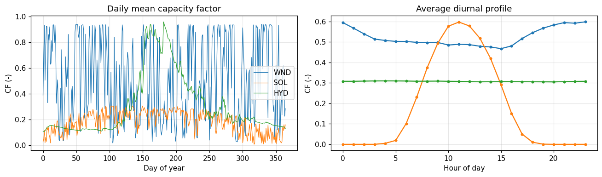
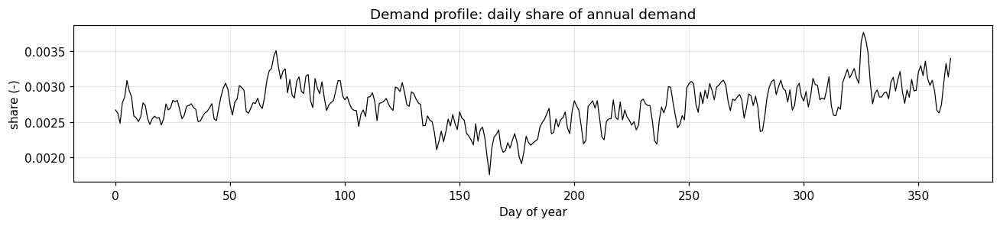
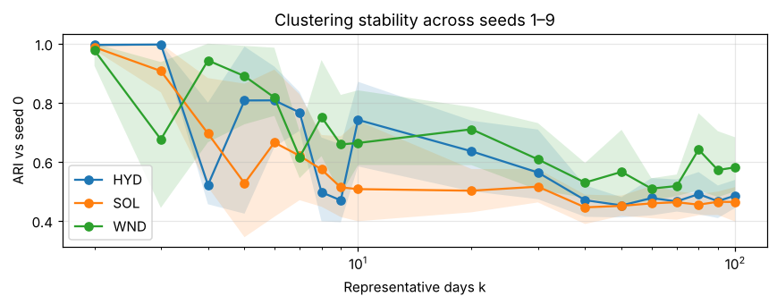
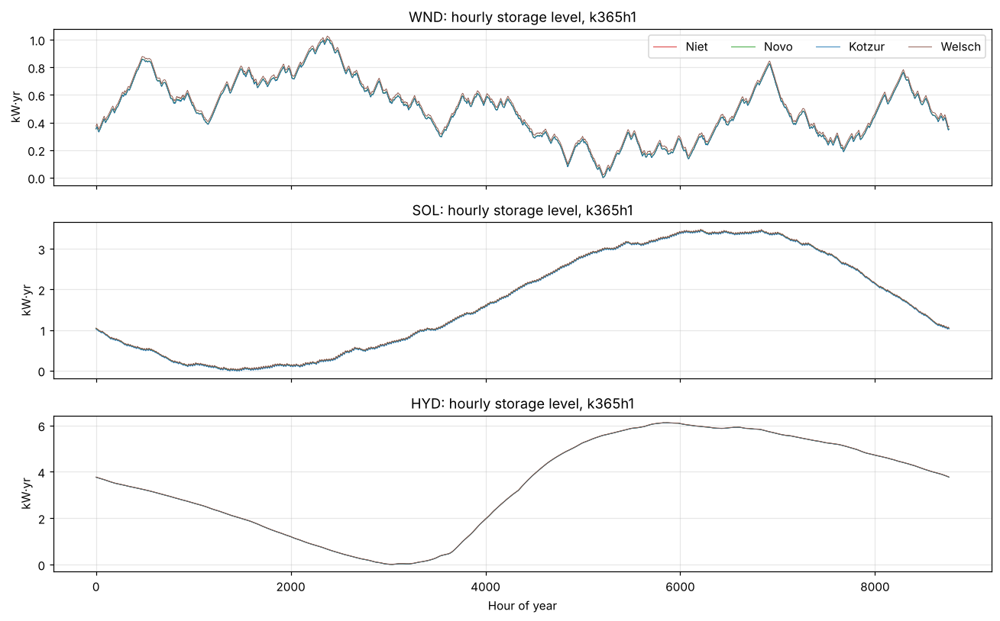
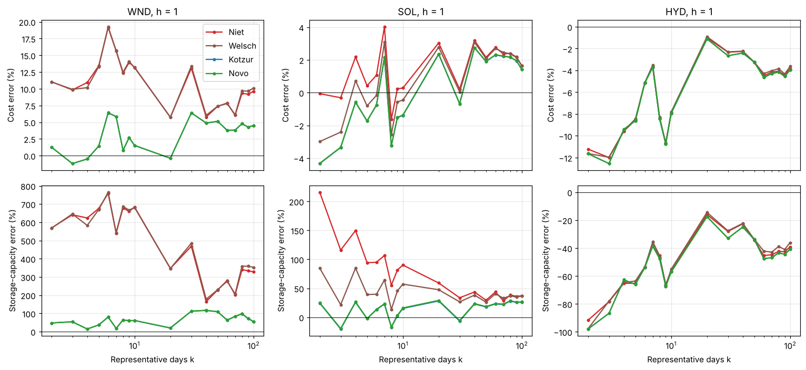
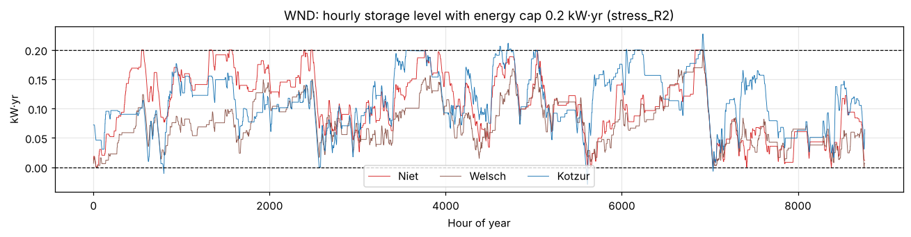
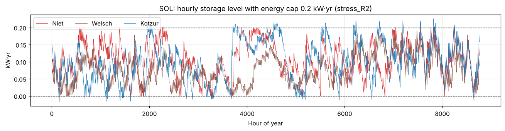

Reproducing the study step by step#
Storage in Long-Term Energy Planning Models with Temporal Aggregation: Best Practices and Algorithms Bruno Borba, Md Eliasinul Islam, Taco Niet — Environmental Research Communications (manuscript ERC-105849)
This notebook regenerates every quantitative result of the paper from the inputs in this repository. Each model run calls main.py unchanged, so the notebook exercises the same code path that produced the published numbers.
Step |
Paper section |
What it does |
Default |
Approx. cost* |
|---|---|---|---|---|
1 |
3.4 |
Environment check against the stated versions |
on |
seconds |
2 |
3.3, Table 3 |
Model inputs and time series (Figures 4–5) |
on |
seconds |
3 |
3.2 |
Representative-day clustering; determinism and multi-seed robustness |
on |
~30 s |
4 |
4.1 |
Independent hand-calculated SoC verification |
on |
~10 s |
5 |
— |
Reproduction check: k4h1 for WND, SOL, HYD against the archived results |
on |
~1 min |
6 |
4.1 |
Full-year hourly benchmarks k365h1 (Figure 6, Table S1) |
off |
~15 min per resource, ~12 GB RAM (Novo) |
7 |
4.2–4.3 |
108 aggregated configurations × 3 resources (Figures 7–8, Tables S2–S4) |
off |
2–4 h (0.8 h solver time), ≤ 3 GB RAM |
8 |
4.2 |
Table 4 and cost-error curves |
on (archive or fresh) |
seconds |
9 |
4.4 |
Binding-capacity stress test, 0.2 kW·yr (Figures 9–10) |
off (archive stats on) |
~20 min per resource |
10 |
4.3 |
SoC fidelity metrics: MAE, RMSE, Pearson, rainflow (Figure 8) |
on (archive) |
seconds |
11 |
3.2 |
Seed sensitivity of system cost |
off |
~10 min |
*Measured with GLPK 5.0 on an Intel Core i7 / 16 GB machine (archived run logs).
Name mapping. The formulation called Novo in the paper is implemented in Model_Cluster; Niet, Welsch and Kotzur map to Model_Niet, Model_Welsch and Model_Kotzur.
Scenario labels. k20h1HYD = 20 representative days, 1-hour intra-day blocks, hydro-dominated system. The suffix _limited marks the stress test.
0. Setup#
Set the switches below to run the heavy steps. Everything else reads either fresh results (folder Results/) or the archived results that accompany the paper.
[6]:
from pathlib import Path
import sys, json
import numpy as np, pandas as pd
import matplotlib.pyplot as plt
REPO = Path.cwd()
assert (REPO / 'main.py').exists(), 'Start Jupyter from the repository root.'
sys.path.insert(0, str(REPO))
import src.reproduce as rp
# ---- switches for the heavy steps -------------------------------------------------------
RUN_REPRODUCTION_CHECK = True # step 5: k4h1 x 3 resources (~1 min)
RUN_BENCHMARK = False # step 6: k365h1 x 3 resources (needs ~12 GB RAM for Novo)
RUN_SWEEP = False # step 7: full grid (2-4 h); see SWEEP_* below
RUN_STRESS = False # step 9: k365h1 WND and SOL with a 0.2 kW.yr cap
RUN_SEED_COSTS = False # step 11: optimisation under alternative k-means seeds
SWEEP_RESOURCES = ['WND', 'SOL', 'HYD']
SWEEP_K = rp.K_VALUES # [2..10, 20..100]
SWEEP_H = rp.H_VALUES # [1, 2, 4, 6, 8, 12]
FRESH = REPO / 'Results' # fresh runs are written here
# ---- archived results of the published study --------------------------------------------
PUBLISHED = REPO / 'data' / 'published_results' # tracked subset (tables + key trajectories)
FULL_ARCHIVE = REPO / 'Results_Demand_Variation' # optional: full archive (Zenodo), all CSVs
ARCH_MAIN = FULL_ARCHIVE / 'Results_Demand_Variation' if FULL_ARCHIVE.exists() else PUBLISHED / 'main'
ARCH_LIM = FULL_ARCHIVE / 'Results_Limited' if FULL_ARCHIVE.exists() else PUBLISHED / 'limited'
archive = rp.load_results(ARCH_MAIN / 'Simulation_Results.xlsx')
archive_lim = rp.load_results(ARCH_LIM / 'Simulation_Results.xlsx')
print(f'Archive: {len(archive)} rows, {archive.Scenario.nunique()} scenarios ({ARCH_MAIN.relative_to(REPO)})')
plt.rcParams.update({'figure.dpi': 110, 'axes.grid': True, 'grid.alpha': .3})
COLORS = {'Niet': '#d62728', 'Welsch': '#8c564b', 'Kotzur': '#1f77b4', 'Novo': '#2ca02c'}
Archive: 1308 rows, 327 scenarios (Results_Demand_Variation/Results_Demand_Variation)
1. Computational environment (Section 3.4)#
Set up with conda env create -f env/environment-crossplatform.yml (GLPK 5.0 from conda-forge, also on Windows). The paper reports GLPK 5.0, Python 3.13.5, otoole 1.1.5 and scikit-learn 1.7.1. Solver version affects runtimes; scikit-learn version affects clustering (before 1.4, KMeans defaulted to n_init=10; the code now sets n_init=1 explicitly).
[7]:
env = rp.check_environment()
env
[7]:
| component | manuscript | installed | status | |
|---|---|---|---|---|
| 0 | python | 3.13.5 | 3.13.5 | match |
| 1 | glpsol | 5.0 | 5.0 | match |
| 2 | otoole | 1.1.5 | 1.1.5 | match |
| 3 | scikit-learn | 1.7.1 | 1.7.1 | match |
| 4 | pandas | 2.2.3 | 2.2.3 | match |
| 5 | numpy | 2.3.1 | 2.3.1 | match |
2. Model inputs (Section 3.3, Table 3; Figures 4–5)#
A single-node system: one VRE technology (label WINDPOWER for all three resources; only its capacity-factor profile changes), one battery and an electricity demand. The values below are read directly from inputs_csv/ and the otoole defaults, i.e. what the solver actually sees.
Note. Annual demand (20) and the VRE variable cost (20) are not listed in Table 3 of the R2 draft, but both change total cost.
[8]:
import yaml
def csv_val(name, **flt):
d = pd.read_csv(REPO / 'inputs_csv' / f'{name}.csv')
for k, v in flt.items(): d = d[d[k] == v]
return d['VALUE'].iloc[0] if len(d) else None
otc = yaml.safe_load(open(REPO / 'Model_Niet' / 'otoole_config_Niet.yaml'))
cfg = yaml.safe_load(open(REPO / 'config' / 'config.yaml'))
default = lambda p: otc[p]['default']
table3 = pd.DataFrame([
('VRE capital cost', csv_val('CapitalCost', TECHNOLOGY='WINDPOWER'), 'inputs_csv/CapitalCost.csv'),
('VRE variable cost', csv_val('VariableCost', TECHNOLOGY='WINDPOWER'), 'inputs_csv/VariableCost.csv'),
('Storage capital cost (per kW.yr)', default('CapitalCostStorage'), 'otoole default'),
('Storage charge input ratio (1/round-trip eff.)', csv_val('InputActivityRatio', TECHNOLOGY='BATTERY_STORAGE'), 'inputs_csv/InputActivityRatio.csv'),
('Storage variable cost', default('VariableCost'), 'otoole default (battery not listed in VariableCost.csv)'),
('Annual electricity demand', csv_val('SpecifiedAnnualDemand'), 'inputs_csv/SpecifiedAnnualDemand.csv'),
('Residual storage capacity (kW.yr)', cfg['ResidualStorageCapacity'], 'config.yaml'),
('Minimum storage charge', default('MinStorageCharge'), 'otoole default'),
('Discount rate', default('DiscountRate'), 'otoole default'),
('Operational life (years)', default('OperationalLife'), 'otoole default'),
('Storage energy cap, unconstrained runs (kW.yr)', rp.UNCONSTRAINED_CAP, 'reproduce.py'),
('Storage energy cap, stress test (kW.yr)', rp.STRESS_CAP, 'reproduce.py'),
], columns=['Parameter', 'Value', 'Source'])
table3
[8]:
| Parameter | Value | Source | |
|---|---|---|---|
| 0 | VRE capital cost | 999999.000 | inputs_csv/CapitalCost.csv |
| 1 | VRE variable cost | 4.167 | inputs_csv/VariableCost.csv |
| 2 | Storage capital cost (per kW.yr) | 1000.000 | otoole default |
| 3 | Storage charge input ratio (1/round-trip eff.) | 1.250 | inputs_csv/InputActivityRatio.csv |
| 4 | Storage variable cost | 20.000 | otoole default (battery not listed in Variable... |
| 5 | Annual electricity demand | 2.000 | inputs_csv/SpecifiedAnnualDemand.csv |
| 6 | Residual storage capacity (kW.yr) | 0.050 | config.yaml |
| 7 | Minimum storage charge | 0.000 | otoole default |
| 8 | Discount rate | 0.050 | otoole default |
| 9 | Operational life (years) | 1.000 | otoole default |
| 10 | Storage energy cap, unconstrained runs (kW.yr) | 1000.000 | reproduce.py |
| 11 | Storage energy cap, stress test (kW.yr) | 0.200 | reproduce.py |
[9]:
D = REPO / 'Data_8760'
cf = {r: pd.read_csv(D / f)['VALUE'].to_numpy() for r, f in rp.RESOURCES.items()}
dem = pd.read_csv(D / rp.DEMAND_PROFILE)['VALUE'].to_numpy()
fig, ax = plt.subplots(1, 2, figsize=(12, 3.6))
for r, v in cf.items():
ax[0].plot(v.reshape(365, 24).mean(1), lw=.8, label=r)
ax[1].plot(v.reshape(365, 24).mean(0), marker='o', ms=3, label=r)
ax[0].set(title='Daily mean capacity factor', xlabel='Day of year', ylabel='CF (-)')
ax[1].set(title='Average diurnal profile', xlabel='Hour of day', ylabel='CF (-)')
ax[0].legend(); plt.tight_layout(); plt.show()
fig, ax = plt.subplots(figsize=(12, 2.8))
ax.plot(dem.reshape(365, 24).sum(1), color='k', lw=.8)
ax.set(title='Demand profile: daily share of annual demand', xlabel='Day of year', ylabel='share (-)')
plt.tight_layout(); plt.show()
print({r: dict(mean=v.mean().round(3), min=v.min().round(3), max=v.max().round(3)) for r, v in cf.items()},
'| demand profile sums to', dem.sum().round(6))


{'WND': {'mean': np.float64(0.524), 'min': np.float64(0.01), 'max': np.float64(0.939)}, 'SOL': {'mean': np.float64(0.184), 'min': np.float64(0.0), 'max': np.float64(0.941)}, 'HYD': {'mean': np.float64(0.307), 'min': np.float64(0.107), 'max': np.float64(1.0)}} | demand profile sums to 1.0
3. Representative days (Section 3.2)#
Each day is a 48-dimensional vector (24 min–max-scaled capacity factors and 24 scaled demand values). k-means (scikit-learn, k-means++ initialisation, n_init = 1, random_state = 0) partitions the 365 days, and the day closest to each centroid becomes the representative day. All four formulations receive the same clustering.
[10]:
rep, seq = rp.clustering('WND', 4)
rep2, seq2 = rp.clustering('WND', 4)
print('Representative days (WND, k=4):', rep)
print('Days represented by each:', {d: seq.count(d) for d in rep})
print('Deterministic for a fixed seed:', rep == rep2 and seq == seq2)
---------------------------------------------------------------------------
TypeError Traceback (most recent call last)
Cell In[10], line 1
----> 1 rep, seq = rp.clustering('WND', 4)
2 rep2, seq2 = rp.clustering('WND', 4)
3 print('Representative days (WND, k=4):', rep)
4 print('Days represented by each:', {d: seq.count(d) for d in rep})
File ~/work/storage-in-OSeMOSYS/src/reproduce.py:241, in clustering(resource, k, random_state)
239 """Representative days and chronological day->representative mapping, as used by main.py."""
240 from src.cluster import cluster_data
--> 241 return cluster_data(REPO / "Data_8760" / RESOURCES[resource], REPO / "Data_8760" / DEMAND_PROFILE,
242 k, random_state=random_state)
TypeError: cluster_data() got an unexpected keyword argument 'random_state'
3.1 Multi-seed robustness (reviewer comment C2)#
The clustering is repeated with seeds 1–9 and compared with seed 0:
ARI: adjusted Rand index of the day partition (1 = identical partition up to relabelling; 0 = chance level).
day agreement: share of days assigned to the same representative day as with seed 0 (stricter, because two seeds can find the same cluster but a different medoid day).
same representative days: whether the selected set of days is identical.
[ ]:
seeds = rp.seed_robustness()
summary_seed = (seeds.groupby('k')[['ARI', 'day_agreement', 'same_rep_days']].mean()
.rename(columns={'same_rep_days': 'share identical rep-day sets'}))
display(summary_seed.round(3).T)
print('Over all resources, k and seeds: mean ARI = %.3f (min %.3f); mean day agreement = %.3f; '
'identical representative-day sets in %d of %d comparisons.'
% (seeds.ARI.mean(), seeds.ARI.min(), seeds.day_agreement.mean(), seeds.same_rep_days.sum(), len(seeds)))
fig, ax = plt.subplots(figsize=(8, 3.2))
for r, g in seeds.groupby('resource'):
m = g.groupby('k').ARI.agg(['mean', 'min', 'max'])
ax.plot(m.index, m['mean'], marker='o', label=r); ax.fill_between(m.index, m['min'], m['max'], alpha=.15)
ax.set(xscale='log', xlabel='Representative days k', ylabel='ARI vs seed 0', title='Clustering stability across seeds 1–9')
ax.legend(); plt.tight_layout(); plt.show()
| k | 2 | 3 | 4 | 5 | 6 | 7 | 8 | 9 | 10 | 20 | 30 | 40 | 50 | 60 | 70 | 80 | 90 | 100 |
|---|---|---|---|---|---|---|---|---|---|---|---|---|---|---|---|---|---|---|
| ARI | 0.987 | 0.860 | 0.720 | 0.741 | 0.763 | 0.667 | 0.607 | 0.547 | 0.637 | 0.616 | 0.562 | 0.481 | 0.489 | 0.481 | 0.482 | 0.528 | 0.501 | 0.510 |
| day_agreement | 0.997 | 0.693 | 0.467 | 0.576 | 0.486 | 0.372 | 0.271 | 0.198 | 0.321 | 0.291 | 0.268 | 0.253 | 0.315 | 0.266 | 0.306 | 0.341 | 0.360 | 0.401 |
| share identical rep-day sets | 1.000 | 0.519 | 0.296 | 0.296 | 0.111 | 0.000 | 0.037 | 0.000 | 0.000 | 0.000 | 0.000 | 0.000 | 0.000 | 0.000 | 0.000 | 0.000 | 0.000 | 0.000 |
Over all resources, k and seeds: mean ARI = 0.621 (min 0.344); mean day agreement = 0.399; identical representative-day sets in 61 of 486 comparisons.

Interpretation. A fixed seed makes the comparison between formulations fair (identical inputs), but it does not make the reported error levels seed-independent. Whether the different clusterings change cost errors and the ranking of formulations is tested in step 11.
4. Independent SoC verification (Section 4.1; reviewer comment C4)#
Four days A–B–A–B, four 6-h blocks per day, no losses, fixed capacities. Each occurrence of A adds 6 MWh and each B removes 6 MWh. The hand-calculated SoC sequence of each formulation (validation_soc/independent_reference.csv) is compared with the model output; for Kotzur and Welsch the existing intraday reconstructions are also checked.
[ ]:
soc_val = rp.run_soc_validation()
display(soc_val)
assert soc_val[['Max_native_error_MWh', 'Max_reconstructed_error_MWh']].fillna(0).abs().max().max() < 1e-6
print('All native and reconstructed SoC values match the hand calculation.')
| Formulation | Native_points | Max_native_error_MWh | Max_reconstructed_error_MWh | |
|---|---|---|---|---|
| 0 | Niet | 8 | 0.0 | NaN |
| 1 | Welsch | 2 | 0.0 | 0.0 |
| 2 | Kotzur | 4 | 0.0 | 0.0 |
| 3 | Novo | 16 | 0.0 | NaN |
All native and reconstructed SoC values match the hand calculation.
5. Reproduction check against the archived results#
Runs k4h1 for the three resources (12 model solves) and compares cost, VRE capacity and storage capacity with the archived study results. Agreement to solver precision confirms that the inputs and code in this repository are those behind the paper.
[ ]:
if RUN_REPRODUCTION_CHECK:
fresh = pd.concat([rp.run_case(r, 4, 1, results_dir=FRESH, verbose=True) for r in ['WND', 'SOL', 'HYD']])
chk = rp.compare_to_archive(fresh, archive)
display(chk[['Scenario', 'Model', 'Total cost (new)', 'Total cost (archive)', 'Total cost rel. diff',
'Storage Capacity rel. diff', 'Power Capacity rel. diff']])
worst = chk.filter(like='rel. diff').max().max()
print(f'Largest relative difference: {worst:.2e}')
assert worst < 1e-6, 'Fresh results differ from the archive'
k4h1WND: done in 12.1 s
k4h1SOL: done in 12.6 s
k4h1HYD: done in 12.7 s
| Scenario | Model | Total cost (new) | Total cost (archive) | Total cost rel. diff | Storage Capacity rel. diff | Power Capacity rel. diff | |
|---|---|---|---|---|---|---|---|
| 0 | k4h1WND | Model_Cluster | 50762.64310 | 50762.64310 | 0.0 | 0.000000e+00 | 2.437632e-15 |
| 1 | k4h1WND | Model_Kotzur | 50762.64310 | 50762.64310 | 0.0 | 0.000000e+00 | 0.000000e+00 |
| 2 | k4h1WND | Model_Niet | 56593.84319 | 56593.84319 | 0.0 | 2.821359e-15 | 2.437634e-15 |
| 3 | k4h1WND | Model_Welsch | 56203.53786 | 56203.53786 | 0.0 | 1.223122e-14 | 2.193871e-14 |
| 4 | k4h1SOL | Model_Cluster | 152451.86590 | 152451.86590 | 0.0 | 6.983842e-15 | 0.000000e+00 |
| 5 | k4h1SOL | Model_Kotzur | 152431.26640 | 152431.26640 | 0.0 | 4.540588e-15 | 0.000000e+00 |
| 6 | k4h1SOL | Model_Niet | 156668.35310 | 156668.35310 | 0.0 | 2.495922e-15 | 0.000000e+00 |
| 7 | k4h1SOL | Model_Welsch | 154447.48990 | 154447.48990 | 0.0 | 4.427132e-14 | 4.077409e-14 |
| 8 | k4h1HYD | Model_Cluster | 82299.83452 | 82299.83452 | 0.0 | 2.200870e-14 | 4.225193e-14 |
| 9 | k4h1HYD | Model_Kotzur | 82299.83452 | 82299.83452 | 0.0 | 4.323137e-15 | 3.002675e-15 |
| 10 | k4h1HYD | Model_Niet | 82145.66355 | 82145.66355 | 0.0 | 4.639626e-15 | 3.002676e-15 |
| 11 | k4h1HYD | Model_Welsch | 82184.02944 | 82184.02944 | 0.0 | 0.000000e+00 | 1.501338e-15 |
Largest relative difference: 4.43e-14
6. Full-year hourly benchmarks (Section 4.1, Figure 6, Table S1)#
k = 365, h = 1 for each resource. At full resolution the mapping is the identity and all four formulations reduce to the same recursion, so their SoC curves coincide; this is a consistency check, not an independent validation. Novo needs about 12 GB of RAM at k365h1.
[ ]:
if RUN_BENCHMARK:
for r in ['WND', 'SOL', 'HYD']:
rp.run_case(r, 365, 1, results_dir=FRESH, verbose=True)
def results_source():
# archive, with failed solves replaced by re-solved values, overridden by fresh runs
a = archive.copy()
failed = a['Total cost'].fillna(0) <= 0 # GLPK failure recorded as cost 0 (see Step 7)
rerun_f = PUBLISHED / 'corrections' / 'welsch_reruns.xlsx'
if failed.any() and rerun_f.exists():
rr = rp.load_results(rerun_f)
a = pd.concat([a[~failed], rr.assign(source='re-solved')], ignore_index=True)
else:
a = a[~failed]
a['source'] = a.get('source', pd.Series(index=a.index, dtype=object)).fillna('archive')
if (FRESH / 'Simulation_Results.xlsx').exists():
f = rp.load_results(FRESH / 'Simulation_Results.xlsx')
f = f[~f.Scenario.str.contains(r'_s\d+$')]
key = a.Scenario + a.Model
a = a[~key.isin(f.Scenario + f.Model)]
a = pd.concat([a, f.assign(source='fresh')], ignore_index=True)
return a
res = results_source()
bench = res[(res.k == 365) & (res.h == 1)]
display(bench[['resource', 'formulation', 'Total cost', 'Power Capacity', 'Storage Capacity',
'total_time_s', 'memory_MB', 'source']].sort_values(['resource', 'formulation']))
spread = bench.groupby('resource').agg(cost_spread_pct=('Total cost', lambda x: 100 * (x.max() - x.min()) / x.min()),
cap_spread=('Storage Capacity', lambda x: x.max() - x.min()))
display(spread.round(3))
| resource | formulation | Total cost | Power Capacity | Storage Capacity | total_time_s | memory_MB | source | |
|---|---|---|---|---|---|---|---|---|
| 422 | HYD | Kotzur | 90836.46212 | 70.096498 | 6.057958 | 82.98 | 613.4 | archive |
| 423 | HYD | Niet | 90840.54802 | 70.096498 | 6.062044 | 319.63 | 193.0 | archive |
| 421 | HYD | Novo | 90840.56147 | 70.096498 | 6.062057 | 491.14 | 10814.0 | archive |
| 424 | HYD | Welsch | 90852.86695 | 70.096498 | 6.074362 | 294.54 | 1051.7 | archive |
| 1 | SOL | Kotzur | 153297.51630 | 124.180955 | 3.386068 | 61.94 | 621.3 | archive |
| 2 | SOL | Niet | 153330.27880 | 124.180955 | 3.418831 | 115.51 | 185.8 | archive |
| 0 | SOL | Novo | 153330.28640 | 124.180955 | 3.418838 | 421.55 | 12195.1 | archive |
| 3 | SOL | Welsch | 153352.63050 | 124.180955 | 3.441182 | 242.08 | 1042.0 | archive |
| 843 | WND | Kotzur | 51014.00809 | 41.159057 | 0.955107 | 156.29 | 613.4 | archive |
| 844 | WND | Niet | 51015.84985 | 41.159057 | 0.956949 | 134.68 | 193.0 | archive |
| 842 | WND | Novo | 51015.85207 | 41.159057 | 0.956951 | 427.28 | 10814.0 | archive |
| 845 | WND | Welsch | 51053.51364 | 41.159057 | 0.994612 | 256.97 | 1051.7 | archive |
| cost_spread_pct | cap_spread | |
|---|---|---|
| resource | ||
| HYD | 0.018 | 0.016 |
| SOL | 0.036 | 0.055 |
| WND | 0.077 | 0.040 |
The R2 Table 4 note states that at full resolution the formulations agree within 0.08 % on cost and 0.03 kW·yr on capacity. The spread table above is the direct check of that sentence.
[ ]:
src_dir = FRESH if (FRESH / 'k365h1WND_Storage_Level_Model_Niet.csv').exists() else ARCH_MAIN
fig, axes = plt.subplots(3, 1, figsize=(12, 7.5), sharex=True)
for ax, r in zip(axes, ['WND', 'SOL', 'HYD']):
for f, m in [('Niet', 'Niet'), ('Novo', 'Cluster'), ('Kotzur', 'Kotzur_intraday'), ('Welsch', 'Welsch_intraday')]:
p = src_dir / f'k365h1{r}_Storage_Level_Model_{m}.csv'
if p.exists():
ax.plot(rp.read_storage(src_dir, f'k365h1{r}', m), lw=.6, color=COLORS[f], label=f)
ax.set(ylabel='kW·yr', title=f'{r}: hourly storage level, k365h1')
axes[0].legend(ncol=4); axes[-1].set_xlabel('Hour of year'); plt.tight_layout(); plt.show()

7. Aggregated configurations (Sections 4.2–4.3)#
18 values of k × 6 block lengths h = 108 configurations per resource, each solved with all four formulations. Completed scenarios are skipped, so the cell can be interrupted and resumed. The runtime estimate below is taken from the archived logs.
[ ]:
grid = archive[(archive.k != 365) & archive.resource.isin(SWEEP_RESOURCES) & archive.k.isin(SWEEP_K) & archive.h.isin(SWEEP_H)]
print(f'Selected grid: {grid.Scenario.nunique()} scenarios, {len(grid)} solves; '
f'archived wall time {grid.total_time_s.sum() / 3600:.1f} h, peak memory {grid.memory_MB.max() / 1024:.1f} GB')
if RUN_SWEEP:
rp.run_grid(SWEEP_RESOURCES, SWEEP_K, SWEEP_H, results_dir=FRESH)
Selected grid: 324 scenarios, 1296 solves; archived wall time 0.8 h, peak memory 2.9 GB
7.1 Audit of the archived sweep: failed solves#
Eight archived Welsch solves report a total cost of exactly 0. GLPK’s primal simplex stopped with “unable to recover undefined or non-optimal solution”, and the original pipeline then read the result CSVs left over from the previous scenario, so the capacities in these rows are stale. src/simulation.py now detects non-optimal termination, retries with --nopresol, --dual and --exact (identical optima where tested) and never reports capacities from a failed solve. The re-solved
values are in data/published_results/corrections/welsch_reruns.xlsx and replace the failed rows in all tables below.
[ ]:
failed = archive[archive['Total cost'].fillna(0) <= 0]
display(failed[['Scenario', 'Model', 'Total cost', 'Power Capacity', 'Storage Capacity']])
rr_f = PUBLISHED / 'corrections' / 'welsch_reruns.xlsx'
if rr_f.exists():
rr = rp.add_errors(pd.concat([rp.load_results(rr_f), archive[(archive.k == 365) & (archive.Model == 'Model_Cluster')]]))
display(rr[rr.k != 365][['Scenario', 'Model', 'Total cost', 'Power Capacity', 'Storage Capacity', 'cost_err_pct', 'cap_err_pct']].round(3))
| Scenario | Model | Total cost | Power Capacity | Storage Capacity | |
|---|---|---|---|---|---|
| 79 | k5h1SOL | Model_Welsch | 0.0 | 115.266936 | 6.280452 |
| 127 | k7h1SOL | Model_Welsch | 0.0 | 114.010711 | 4.775415 |
| 151 | k8h1SOL | Model_Welsch | 0.0 | 118.072735 | 5.597867 |
| 511 | k4h12HYD | Model_Welsch | 0.0 | 66.258262 | 2.128255 |
| 543 | k6h2HYD | Model_Welsch | 0.0 | 69.030964 | 2.822310 |
| 555 | k6h8HYD | Model_Welsch | 0.0 | 69.022945 | 2.803670 |
| 959 | k5h4WND | Model_Welsch | 0.0 | 41.392659 | 7.357507 |
| 1015 | k7h8WND | Model_Welsch | 0.0 | 43.353997 | 6.126450 |
| Scenario | Model | Total cost | Power Capacity | Storage Capacity | cost_err_pct | cap_err_pct | |
|---|---|---|---|---|---|---|---|
| 0 | k4h12HYD | Model_Welsch | 82162.458 | 66.258 | 2.123 | -9.553 | -64.986 |
| 1 | k6h2HYD | Model_Welsch | 86178.267 | 69.023 | 2.818 | -5.132 | -53.515 |
| 2 | k6h8HYD | Model_Welsch | 86111.206 | 68.989 | 2.794 | -5.206 | -53.917 |
| 4 | k5h1SOL | Model_Welsch | 152095.499 | 122.039 | 4.758 | -0.805 | 39.157 |
| 5 | k7h1SOL | Model_Welsch | 158053.098 | 126.273 | 5.618 | 3.080 | 64.336 |
| 6 | k8h1SOL | Model_Welsch | 149402.534 | 120.532 | 3.878 | -2.562 | 13.425 |
| 8 | k5h4WND | Model_Welsch | 57738.286 | 41.385 | 7.349 | 13.177 | 667.937 |
| 9 | k7h8WND | Model_Welsch | 58672.335 | 43.237 | 6.095 | 15.008 | 536.902 |
8. Table 4 and cost-error curves (Section 4.2; Figure 7)#
Errors are relative to the k365h1 Novo benchmark of the same resource and are computed from unrounded values.
[ ]:
res = results_source()
t4 = rp.table4(res)
display(t4.style.format({'Total cost': '{:,.0f}', 'Cost error (%)': '{:+.1f}', 'Storage capacity (kW·yr)': '{:.2f}',
'Capacity error (%)': '{:+.1f}', 'Runtime (s)': '{:.2f}', 'Memory (MB)': '{:.1f}'}))
| Scenario | Case | Formulation | Total cost | Cost error (%) | Storage capacity (kW·yr) | Capacity error (%) | Runtime (s) | Memory (MB) | |
|---|---|---|---|---|---|---|---|---|---|
| 0 | WND | k365h1 | Niet | 51,016 | -0.0 | 0.96 | -0.0 | 134.68 | 193.0 |
| 1 | WND | k365h1 | Welsch | 51,054 | +0.1 | 0.99 | +3.9 | 256.97 | 1051.7 |
| 2 | WND | k365h1 | Kotzur | 51,014 | -0.0 | 0.96 | -0.2 | 156.29 | 613.4 |
| 3 | WND | k365h1 | Novo | 51,016 | +0.0 | 0.96 | +0.0 | 427.28 | 10814.0 |
| 4 | WND | k8h1 | Niet | 57,305 | +12.3 | 7.45 | +678.9 | 0.35 | 4.2 |
| 5 | WND | k8h1 | Welsch | 57,380 | +12.5 | 7.53 | +686.7 | 0.63 | 13.1 |
| 6 | WND | k8h1 | Kotzur | 51,419 | +0.8 | 1.57 | +63.9 | 0.34 | 5.9 |
| 7 | WND | k8h1 | Novo | 51,424 | +0.8 | 1.57 | +64.4 | 8.30 | 279.0 |
| 8 | WND | k20h1 | Niet | 53,945 | +5.7 | 4.28 | +347.0 | 0.82 | 9.5 |
| 9 | WND | k20h1 | Welsch | 53,942 | +5.7 | 4.27 | +346.7 | 2.13 | 30.7 |
| 10 | WND | k20h1 | Kotzur | 50,811 | -0.4 | 1.14 | +19.5 | 0.68 | 11.5 |
| 11 | WND | k20h1 | Novo | 50,821 | -0.4 | 1.15 | +20.5 | 31.20 | 631.4 |
| 12 | SOL | k365h1 | Niet | 153,330 | -0.0 | 3.42 | -0.0 | 115.51 | 185.8 |
| 13 | SOL | k365h1 | Welsch | 153,353 | +0.0 | 3.44 | +0.7 | 242.08 | 1042.0 |
| 14 | SOL | k365h1 | Kotzur | 153,298 | -0.0 | 3.39 | -1.0 | 61.94 | 621.3 |
| 15 | SOL | k365h1 | Novo | 153,330 | +0.0 | 3.42 | +0.0 | 421.55 | 12195.1 |
| 16 | SOL | k9h1 | Niet | 153,697 | +0.2 | 6.21 | +81.6 | 0.22 | 4.9 |
| 17 | SOL | k9h1 | Welsch | 152,467 | -0.6 | 4.98 | +45.6 | 0.69 | 14.5 |
| 18 | SOL | k9h1 | Kotzur | 150,998 | -1.5 | 3.51 | +2.6 | 0.27 | 6.1 |
| 19 | SOL | k9h1 | Novo | 151,023 | -1.5 | 3.53 | +3.3 | 10.38 | 308.3 |
| 20 | SOL | k20h1 | Niet | 157,988 | +3.0 | 5.44 | +59.1 | 0.68 | 9.1 |
| 21 | SOL | k20h1 | Welsch | 157,591 | +2.8 | 5.04 | +47.5 | 2.54 | 32.5 |
| 22 | SOL | k20h1 | Kotzur | 156,927 | +2.3 | 4.38 | +28.1 | 0.79 | 12.0 |
| 23 | SOL | k20h1 | Novo | 156,960 | +2.4 | 4.41 | +29.1 | 27.41 | 633.3 |
| 24 | HYD | k365h1 | Niet | 90,841 | -0.0 | 6.06 | -0.0 | 319.63 | 193.0 |
| 25 | HYD | k365h1 | Welsch | 90,853 | +0.0 | 6.07 | +0.2 | 294.54 | 1051.7 |
| 26 | HYD | k365h1 | Kotzur | 90,836 | -0.0 | 6.06 | -0.1 | 82.98 | 613.4 |
| 27 | HYD | k365h1 | Novo | 90,841 | +0.0 | 6.06 | +0.0 | 491.14 | 10814.0 |
| 28 | HYD | k7h1 | Niet | 87,513 | -3.7 | 3.76 | -37.9 | 0.29 | 3.7 |
| 29 | HYD | k7h1 | Welsch | 87,659 | -3.5 | 3.91 | -35.5 | 0.52 | 11.5 |
| 30 | HYD | k7h1 | Kotzur | 87,473 | -3.7 | 3.72 | -38.6 | 0.34 | 5.4 |
| 31 | HYD | k7h1 | Novo | 87,473 | -3.7 | 3.72 | -38.6 | 8.41 | 249.7 |
| 32 | HYD | k20h1 | Niet | 89,921 | -1.0 | 5.09 | -16.0 | 0.63 | 9.5 |
| 33 | HYD | k20h1 | Welsch | 90,016 | -0.9 | 5.19 | -14.4 | 1.86 | 30.7 |
| 34 | HYD | k20h1 | Kotzur | 89,831 | -1.1 | 5.00 | -17.5 | 0.83 | 11.5 |
| 35 | HYD | k20h1 | Novo | 89,832 | -1.1 | 5.00 | -17.5 | 25.85 | 633.6 |
Traceability check. The R2 draft’s Table 4 values are entered below and compared with the recomputed values. Costs and capacities agree exactly. Some capacity errors differ by up to ~3 percentage points because the draft divides by the benchmark rounded to two decimals (e.g. WND k8h1 Niet: 7.45/0.96 − 1 = +676.0 % versus +678.9 % unrounded).
[ ]:
draft = pd.DataFrame([ # Table 4 of the R2 draft (cost error %, capacity error %)
('WND','k8h1','Niet',57305,12.3,7.45,676.0),('WND','k8h1','Welsch',57380,12.5,7.53,684.4),('WND','k8h1','Kotzur',51419,0.8,1.57,63.5),('WND','k8h1','Novo',51424,0.8,1.57,63.5),
('WND','k20h1','Niet',53945,5.7,4.28,345.8),('WND','k20h1','Welsch',53942,5.7,4.27,344.8),('WND','k20h1','Kotzur',50811,-0.4,1.14,18.7),('WND','k20h1','Novo',50821,-0.4,1.15,19.8),
('SOL','k9h1','Niet',153697,0.2,6.21,81.6),('SOL','k9h1','Welsch',152467,-0.6,4.98,45.6),('SOL','k9h1','Kotzur',150998,-1.5,3.51,2.6),('SOL','k9h1','Novo',151023,-1.5,3.53,3.2),
('SOL','k20h1','Niet',157988,3.0,5.44,59.1),('SOL','k20h1','Welsch',157591,2.8,5.04,47.4),('SOL','k20h1','Kotzur',156927,2.3,4.38,28.1),('SOL','k20h1','Novo',156960,2.4,4.41,28.9),
('HYD','k7h1','Niet',87513,-3.7,3.76,-38.0),('HYD','k7h1','Welsch',87659,-3.5,3.91,-35.5),('HYD','k7h1','Kotzur',87473,-3.7,3.72,-38.6),('HYD','k7h1','Novo',87473,-3.7,3.72,-38.6),
('HYD','k20h1','Niet',89921,-1.0,5.09,-16.0),('HYD','k20h1','Welsch',90016,-0.9,5.19,-14.4),('HYD','k20h1','Kotzur',89831,-1.1,5.00,-17.5),('HYD','k20h1','Novo',89832,-1.1,5.00,-17.5)],
columns=['Scenario','Case','Formulation','cost_draft','cost_err_draft','cap_draft','cap_err_draft'])
tr = draft.merge(t4, on=['Scenario', 'Case', 'Formulation'])
tr['cost diff'] = tr['Total cost'].round(0) - tr['cost_draft']
tr['cap diff'] = tr['Storage capacity (kW·yr)'].round(2) - tr['cap_draft']
tr['cost-err diff (pp)'] = tr['Cost error (%)'].round(1) - tr['cost_err_draft']
tr['cap-err diff (pp)'] = tr['Capacity error (%)'].round(1) - tr['cap_err_draft']
display(tr[['Scenario', 'Case', 'Formulation', 'cost diff', 'cap diff', 'cost-err diff (pp)', 'cap-err diff (pp)']])
| Scenario | Case | Formulation | cost diff | cap diff | cost-err diff (pp) | cap-err diff (pp) | |
|---|---|---|---|---|---|---|---|
| 0 | WND | k8h1 | Niet | 0.0 | 0.0 | 0.0 | 2.9 |
| 1 | WND | k8h1 | Welsch | 0.0 | 0.0 | 0.0 | 2.3 |
| 2 | WND | k8h1 | Kotzur | 0.0 | 0.0 | 0.0 | 0.4 |
| 3 | WND | k8h1 | Novo | 0.0 | 0.0 | 0.0 | 0.9 |
| 4 | WND | k20h1 | Niet | 0.0 | 0.0 | 0.0 | 1.2 |
| 5 | WND | k20h1 | Welsch | 0.0 | 0.0 | 0.0 | 1.9 |
| 6 | WND | k20h1 | Kotzur | 0.0 | 0.0 | 0.0 | 0.8 |
| 7 | WND | k20h1 | Novo | 0.0 | 0.0 | 0.0 | 0.7 |
| 8 | SOL | k9h1 | Niet | 0.0 | 0.0 | 0.0 | 0.0 |
| 9 | SOL | k9h1 | Welsch | 0.0 | 0.0 | 0.0 | 0.0 |
| 10 | SOL | k9h1 | Kotzur | 0.0 | 0.0 | 0.0 | 0.0 |
| 11 | SOL | k9h1 | Novo | 0.0 | 0.0 | 0.0 | 0.1 |
| 12 | SOL | k20h1 | Niet | 0.0 | 0.0 | 0.0 | 0.0 |
| 13 | SOL | k20h1 | Welsch | 0.0 | 0.0 | 0.0 | 0.1 |
| 14 | SOL | k20h1 | Kotzur | 0.0 | 0.0 | 0.0 | 0.0 |
| 15 | SOL | k20h1 | Novo | 0.0 | 0.0 | 0.0 | 0.2 |
| 16 | HYD | k7h1 | Niet | 0.0 | 0.0 | 0.0 | 0.1 |
| 17 | HYD | k7h1 | Welsch | 0.0 | 0.0 | 0.0 | 0.0 |
| 18 | HYD | k7h1 | Kotzur | 0.0 | 0.0 | 0.0 | 0.0 |
| 19 | HYD | k7h1 | Novo | 0.0 | 0.0 | 0.0 | 0.0 |
| 20 | HYD | k20h1 | Niet | 0.0 | 0.0 | 0.0 | 0.0 |
| 21 | HYD | k20h1 | Welsch | 0.0 | 0.0 | 0.0 | 0.0 |
| 22 | HYD | k20h1 | Kotzur | 0.0 | 0.0 | 0.0 | 0.0 |
| 23 | HYD | k20h1 | Novo | 0.0 | 0.0 | 0.0 | 0.0 |
[ ]:
d = rp.add_errors(res[~res.limited]) # benchmark must be present when errors are computed
d = d[d.k != 365]
fig, axes = plt.subplots(2, 3, figsize=(14, 6.5), sharex=True)
for j, r in enumerate(['WND', 'SOL', 'HYD']):
for f in ['Niet', 'Welsch', 'Kotzur', 'Novo']:
g = d[(d.resource == r) & (d.formulation == f) & (d.h == 1)].sort_values('k')
axes[0, j].plot(g.k, g.cost_err_pct, marker='o', ms=3, color=COLORS[f], label=f)
axes[1, j].plot(g.k, g.cap_err_pct, marker='o', ms=3, color=COLORS[f], label=f)
axes[0, j].set(title=f'{r}, h = 1', ylabel='Cost error (%)'); axes[1, j].set(xlabel='Representative days k', ylabel='Storage-capacity error (%)', xscale='log')
for a in axes[:, j]: a.axhline(0, color='k', lw=.6)
axes[0, 0].legend(); plt.tight_layout(); plt.show()
# intra-day resolution: cost error vs h (median over k)
piv = d.groupby(['resource', 'formulation', 'h']).cost_err_pct.apply(lambda x: x.abs().median()).unstack('h')
display(piv.round(2).style.set_caption('Median |cost error| (%) across k, by block length h'))

| h | 1 | 2 | 4 | 6 | 8 | 12 | |
|---|---|---|---|---|---|---|---|
| resource | formulation | ||||||
| HYD | Kotzur | 4.600000 | 4.600000 | 4.620000 | 4.620000 | 4.630000 | 4.650000 |
| Niet | 4.470000 | 4.470000 | 4.480000 | 4.480000 | 4.490000 | 4.510000 | |
| Novo | 4.600000 | 4.600000 | 4.620000 | 4.620000 | 4.630000 | 4.650000 | |
| Welsch | 4.310000 | 4.320000 | 4.340000 | 4.360000 | 4.380000 | 4.430000 | |
| SOL | Kotzur | 2.050000 | 1.940000 | 1.670000 | 1.640000 | 1.650000 | 5.670000 |
| Niet | 1.900000 | 1.970000 | 1.580000 | 1.220000 | 1.110000 | 4.850000 | |
| Novo | 2.060000 | 1.940000 | 1.670000 | 1.640000 | 1.650000 | 5.670000 | |
| Welsch | 2.260000 | 2.130000 | 1.700000 | 1.400000 | 1.520000 | 4.820000 | |
| WND | Kotzur | 3.790000 | 3.760000 | 3.690000 | 3.640000 | 3.440000 | 3.110000 |
| Niet | 10.380000 | 10.280000 | 10.170000 | 10.210000 | 10.170000 | 9.790000 | |
| Novo | 3.800000 | 3.780000 | 3.710000 | 3.660000 | 3.460000 | 3.120000 | |
| Welsch | 10.130000 | 10.050000 | 9.920000 | 9.910000 | 9.880000 | 9.680000 |
[ ]:
# Computational burden (all aggregated configurations)
cb = res[~res.limited].groupby(['resource', 'formulation'])[['total_time_s', 'memory_MB']].median().unstack('formulation')
display(cb.round(2).style.set_caption('Median matrix-generation + solve time (s) and memory (MB)'))
| total_time_s | memory_MB | |||||||
|---|---|---|---|---|---|---|---|---|
| formulation | Kotzur | Niet | Novo | Welsch | Kotzur | Niet | Novo | Welsch |
| resource | ||||||||
| HYD | 0.280000 | 0.210000 | 0.940000 | 0.290000 | 5.600000 | 3.200000 | 43.100000 | 5.800000 |
| SOL | 0.320000 | 0.240000 | 1.040000 | 0.320000 | 5.900000 | 3.200000 | 43.000000 | 5.800000 |
| WND | 0.270000 | 0.210000 | 0.960000 | 0.250000 | 5.900000 | 3.200000 | 43.100000 | 5.800000 |
9. Binding storage-capacity stress test (Section 4.4; Figures 9–10)#
Full-year hourly runs with total storage energy capacity capped at 0.2 kW·yr (StorageMaxCapacity = 0.2; reported new capacity is then 0.15 because 0.05 is residual). Kotzur verifies SoC only at day boundaries, so its reconstructed hourly trajectory can leave the bounds.
Two counting conventions are reported. Strict counts physically infeasible states (SoC > 0.2 or < 0). At or beyond also counts hours exactly at the upper bound, which are feasible; the R2 draft’s wind figure (224 h; 183 above) corresponds to this second convention.
[ ]:
if RUN_STRESS:
for r in ['WND', 'SOL']:
rp.run_case(r, 365, 1, cap=rp.STRESS_CAP, results_dir=FRESH, verbose=True)
STRESS_SOURCES = {'fresh': FRESH, 'regenerated R2 (paper inputs)': PUBLISHED / 'stress_R2', 'archive': ARCH_LIM}
rows = []
for r in ['WND', 'SOL']:
name = f'k365h1{r}_limited'
for label, d_ in STRESS_SOURCES.items():
if not (d_ / f'{name}_Storage_Level_Model_Kotzur_intraday.csv').exists():
continue
tab = rp.load_results(d_ / 'Simulation_Results.xlsx') # cap is not encoded in file names
t = tab[tab.Scenario == name].set_index('formulation')
cap = t.loc['Kotzur', 'Storage Capacity'] + rp.RESIDUAL_STORAGE
for f, m in [('Kotzur', 'Kotzur_intraday'), ('Niet', 'Niet'), ('Novo', 'Cluster'), ('Welsch', 'Welsch_intraday')]:
if (d_ / f'{name}_Storage_Level_Model_{m}.csv').exists():
v = rp.soc_violations(rp.read_storage(d_, name, m), upper=cap)
rows.append({'resource': r, 'source': label, 'formulation': f, 'cap (kW.yr)': round(cap, 4),
'total cost': t.loc[f, 'Total cost'] if f in t.index else np.nan, **v})
stress = pd.DataFrame(rows)
display(stress.round(4))
| resource | source | formulation | cap (kW.yr) | total cost | n | max | min | above_strict | below_strict | total_strict | share_strict_pct | at_or_above_upper | total_if_counting_at_bound | share_if_counting_at_bound_pct | |
|---|---|---|---|---|---|---|---|---|---|---|---|---|---|---|---|
| 0 | WND | regenerated R2 (paper inputs) | Kotzur | 0.2 | 136990.7749 | 8760 | 0.2274 | -0.0295 | 67 | 40 | 107 | 1.2215 | 187 | 227 | 2.5913 |
| 1 | WND | regenerated R2 (paper inputs) | Niet | 0.2 | 227531.9429 | 8760 | 0.2000 | 0.0000 | 0 | 0 | 0 | 0.0000 | 197 | 197 | 2.2489 |
| 2 | WND | regenerated R2 (paper inputs) | Welsch | 0.2 | 227533.1312 | 8760 | 0.2000 | 0.0000 | 0 | 0 | 0 | 0.0000 | 1 | 1 | 0.0114 |
| 3 | WND | archive | Kotzur | 0.2 | 126111.2565 | 8760 | 0.2213 | -0.0271 | 114 | 41 | 155 | 1.7694 | 183 | 224 | 2.5571 |
| 4 | WND | archive | Niet | 0.2 | 136451.2731 | 8760 | 0.2000 | 0.0000 | 0 | 0 | 0 | 0.0000 | 13 | 13 | 0.1484 |
| 5 | WND | archive | Novo | 0.2 | 136451.4557 | 8760 | 0.2000 | 0.0000 | 0 | 0 | 0 | 0.0000 | 60 | 60 | 0.6849 |
| 6 | WND | archive | Welsch | 0.2 | 143270.6770 | 8760 | 0.1956 | -0.0000 | 0 | 0 | 0 | 0.0000 | 0 | 0 | 0.0000 |
| 7 | SOL | regenerated R2 (paper inputs) | Kotzur | 0.2 | 413582.2431 | 8760 | 0.2258 | -0.0175 | 267 | 215 | 482 | 5.5023 | 277 | 492 | 5.6164 |
| 8 | SOL | regenerated R2 (paper inputs) | Niet | 0.2 | 426705.3476 | 8760 | 0.2000 | 0.0000 | 0 | 0 | 0 | 0.0000 | 45 | 45 | 0.5137 |
| 9 | SOL | regenerated R2 (paper inputs) | Welsch | 0.2 | 457891.1365 | 8760 | 0.1954 | 0.0000 | 0 | 0 | 0 | 0.0000 | 0 | 0 | 0.0000 |
| 10 | SOL | archive | Kotzur | 3.0 | 168474.9062 | 8760 | 3.0186 | -0.0147 | 11 | 25 | 36 | 0.4110 | 12 | 37 | 0.4224 |
| 11 | SOL | archive | Niet | 3.0 | 169694.4204 | 8760 | 3.0000 | 0.0000 | 0 | 0 | 0 | 0.0000 | 2 | 2 | 0.0228 |
| 12 | SOL | archive | Novo | 3.0 | 169694.6618 | 8760 | 3.0000 | 0.0000 | 0 | 0 | 0 | 0.0000 | 1 | 1 | 0.0114 |
| 13 | SOL | archive | Welsch | 3.0 | 170590.3639 | 8760 | 2.9853 | 0.0000 | 0 | 0 | 0 | 0.0000 | 0 | 0 | 0.0000 |
Provenance of the Section 4.4 numbers.
Solar: the regenerated run with the paper’s inputs reproduces the R2 text exactly (max 0.2258, min −0.0175, 267 h above, 215 h below, 482 h = 5.50 %, strict counting). The archived solar “limited” run used a cap of 3.0 kW·yr and is unrelated.
Wind: the R2 values (max 0.2213, min −0.0271) come from the archived run, whose costs differ from a run with the paper’s inputs. That run therefore used different inputs from the main study. The regenerated wind run should replace it (Figure 9 and the text). Its hours-above-bound must be counted strictly, like solar: the R2 figure of 183 h counts hours exactly at the bound.
The regenerated runs omit Novo, which needs ~12 GB of RAM at k365h1; Novo does not affect the Kotzur trajectory. Set
RUN_STRESS = Trueon a 16 GB machine to complete them.Cost column: under the binding cap, Kotzur’s total cost is clearly lower than that of the formulations that keep SoC within bounds. The claim that the violations do not materially alter cost should be revisited.
[ ]:
for r in ['WND', 'SOL']:
name = f'k365h1{r}_limited'
d_ = next((d for d in STRESS_SOURCES.values() if (d / f'{name}_Storage_Level_Model_Kotzur_intraday.csv').exists()), None)
if d_ is None:
continue
cap = stress[(stress.resource == r) & (stress.source == [k for k, v in STRESS_SOURCES.items() if v == d_][0])]['cap (kW.yr)'].iloc[0]
fig, ax = plt.subplots(figsize=(12, 3.2))
for f, m in [('Niet', 'Niet'), ('Novo', 'Cluster'), ('Welsch', 'Welsch_intraday'), ('Kotzur', 'Kotzur_intraday')]:
p = d_ / f'{name}_Storage_Level_Model_{m}.csv'
if p.exists():
ax.plot(rp.read_storage(d_, name, m), lw=.6, color=COLORS[f], label=f)
ax.axhline(cap, color='k', ls='--', lw=.8); ax.axhline(0, color='k', ls='--', lw=.8)
ax.set(title=f'{r}: hourly storage level with energy cap {cap} kW·yr ({d_.name})', xlabel='Hour of year', ylabel='kW·yr')
ax.legend(ncol=4); plt.tight_layout(); plt.show()


10. SoC fidelity metrics (Section 4.3; Figure 8)#
The repository did not contain the script used for Figure 8, so the metrics are re-implemented here with explicit definitions:
each aggregated trajectory is expanded to 8760 h (Novo and Kotzur: chronological blocks, Kotzur reconstructed; Welsch: its reconstructed trajectory in native grouped day-type order, as in
graph_generator.py; Niet: representative blocks held for their year-split duration);MAE, RMSE and Pearson r against the k365h1 benchmark;
rainflow counting (ASTM E1049, half cycles = 0.5) of each trajectory, compared with the benchmark count.
Values may differ from the published Figure 8 if the original script used other alignment conventions; the definitions above should be stated in the paper.
[ ]:
CASES = [('WND', 8, 1), ('WND', 20, 1), ('SOL', 9, 1), ('SOL', 20, 1), ('HYD', 7, 1), ('HYD', 20, 1)]
rows = []
for r, k, h in CASES:
name = f'k{k}h{h}{r}'
d_ = FRESH if (FRESH / f'{name}_Storage_Level_Model_Cluster.csv').exists() else ARCH_MAIN
bdir = FRESH if (FRESH / f'k365h1{r}_Storage_Level_Model_Niet.csv').exists() else ARCH_MAIN
if not (d_ / f'{name}_Storage_Level_Model_Cluster.csv').exists():
print(f'{name}: trajectories not available (download the full archive)'); continue
b = rp.read_storage(bdir, f'k365h1{r}', 'Niet').to_numpy()
for f in ['Niet', 'Welsch', 'Kotzur', 'Novo']:
try:
t = rp.hourly_trajectory(d_, name, f, h)
rows.append({'case': name, 'formulation': f, **rp.fidelity_metrics(b, t)})
except FileNotFoundError as e:
print(e)
fid = pd.DataFrame(rows)
if fid.empty:
print('No trajectories found: place the full archive as Results_Demand_Variation/ or run the cases.')
else:
fid['cycle error (%)'] = 100 * (fid.rainflow_cycles / fid.rainflow_cycles_benchmark - 1)
display(fid.round(4))
| case | formulation | MAE | RMSE | Pearson | rainflow_cycles | rainflow_cycles_benchmark | cycle error (%) | |
|---|---|---|---|---|---|---|---|---|
| 0 | k8h1WND | Niet | 3.8406 | 4.5450 | -0.7621 | 6.0 | 241.5 | -97.5155 |
| 1 | k8h1WND | Welsch | 3.9106 | 4.6406 | -0.7562 | 199.0 | 241.5 | -17.5983 |
| 2 | k8h1WND | Kotzur | 0.3393 | 0.3993 | 0.9178 | 187.5 | 241.5 | -22.3602 |
| 3 | k8h1WND | Novo | 0.3432 | 0.4030 | 0.9178 | 187.5 | 241.5 | -22.3602 |
| 4 | k20h1WND | Niet | 1.5785 | 1.8523 | -0.2928 | 16.0 | 241.5 | -93.3747 |
| 5 | k20h1WND | Welsch | 1.5190 | 1.7895 | -0.2894 | 210.0 | 241.5 | -13.0435 |
| 6 | k20h1WND | Kotzur | 0.1517 | 0.1914 | 0.8344 | 189.0 | 241.5 | -21.7391 |
| 7 | k20h1WND | Novo | 0.1535 | 0.1938 | 0.8344 | 189.0 | 241.5 | -21.7391 |
| 8 | k9h1SOL | Niet | 1.2404 | 1.4084 | 0.8868 | 8.5 | 354.5 | -97.6023 |
| 9 | k9h1SOL | Welsch | 0.6273 | 0.7672 | 0.9487 | 323.5 | 354.5 | -8.7447 |
| 10 | k9h1SOL | Kotzur | 0.1277 | 0.1673 | 0.9913 | 323.5 | 354.5 | -8.7447 |
| 11 | k9h1SOL | Novo | 0.1289 | 0.1690 | 0.9913 | 323.5 | 354.5 | -8.7447 |
| 12 | k20h1SOL | Niet | 1.0992 | 1.3273 | 0.7925 | 18.5 | 354.5 | -94.7814 |
| 13 | k20h1SOL | Welsch | 0.9626 | 1.1868 | 0.8120 | 346.5 | 354.5 | -2.2567 |
| 14 | k20h1SOL | Kotzur | 0.4245 | 0.5515 | 0.9899 | 346.5 | 354.5 | -2.2567 |
| 15 | k20h1SOL | Novo | 0.4332 | 0.5625 | 0.9899 | 346.5 | 354.5 | -2.2567 |
| 16 | k7h1HYD | Niet | 1.9531 | 2.5262 | 0.4167 | 5.5 | 43.5 | -87.3563 |
| 17 | k7h1HYD | Welsch | 1.9295 | 2.4960 | 0.4201 | 240.5 | 43.5 | 452.8736 |
| 18 | k7h1HYD | Kotzur | 1.9228 | 2.3137 | 0.7956 | 264.0 | 43.5 | 506.8966 |
| 19 | k7h1HYD | Novo | 1.9228 | 2.3137 | 0.7956 | 264.0 | 43.5 | 506.8966 |
| 20 | k20h1HYD | Niet | 1.2624 | 1.4574 | 0.8011 | 15.0 | 43.5 | -65.5172 |
| 21 | k20h1HYD | Welsch | 1.2380 | 1.4223 | 0.7972 | 255.0 | 43.5 | 486.2069 |
| 22 | k20h1HYD | Kotzur | 1.0184 | 1.2421 | 0.9344 | 287.0 | 43.5 | 559.7701 |
| 23 | k20h1HYD | Novo | 1.0184 | 1.2421 | 0.9344 | 287.0 | 43.5 | 559.7701 |
11. Seed sensitivity of system cost (reviewer comment C2)#
Re-solves selected configurations with seeds 1 and 2 and compares total-cost error with seed 0. The question is whether the seed-induced spread is small compared with the differences between formulations.
[ ]:
SEED_DIR = REPO / 'Results_seeds'
if RUN_SEED_COSTS:
for s in [1, 2]:
for r in ['WND', 'SOL', 'HYD']:
for k in [4, 8, 20]:
rp.run_case(r, k, 1, random_state=s, results_dir=SEED_DIR, suffix=f'_s{s}', verbose=True)
sd = None
if (SEED_DIR / 'Simulation_Results.xlsx').exists():
sd = rp.load_results(SEED_DIR / 'Simulation_Results.xlsx')
elif (PUBLISHED / 'seeds' / 'seed_runs.xlsx').exists():
sd = rp.load_results(PUBLISHED / 'seeds' / 'seed_runs.xlsx')
if sd is not None:
sd['seed'] = sd.Scenario.str.extract(r'_s(\d+)$')[0].astype(int)
sd['resource'] = sd.Scenario.str.extract(r'(WND|SOL|HYD)')[0]
_r = results_source()
base = _r[(_r.h == 1) & _r.k.isin(sd.k.unique()) & ~_r.limited].assign(seed=0)
allseeds = pd.concat([base, sd], ignore_index=True)
bm = archive[(archive.k == 365) & (archive.Model == 'Model_Cluster')].set_index('resource')['Total cost']
allseeds['cost_err_pct'] = 100 * (allseeds['Total cost'] / allseeds.resource.map(bm) - 1)
piv = allseeds.pivot_table(index=['resource', 'k', 'formulation'], columns='seed', values='cost_err_pct')
piv['seed spread (pp)'] = piv.max(1) - piv.min(1)
display(piv.round(2))
between = allseeds[allseeds.seed == 0].groupby(['resource', 'k']).cost_err_pct.agg(lambda x: x.max() - x.min())
within = piv['seed spread (pp)'].groupby(level=[0, 1]).max()
cmp_ = pd.DataFrame({'max seed spread (pp)': within, 'between-formulation range, seed 0 (pp)': between})
display(cmp_.round(2))
best = (allseeds.assign(a=allseeds.cost_err_pct.abs()).sort_values('a')
.groupby(['resource', 'k', 'seed']).formulation.first().unstack('seed'))
display(best.rename_axis(columns='seed').style.set_caption('Formulation with the smallest |cost error|'))
cap_piv = allseeds.pivot_table(index=['resource', 'k', 'formulation'], columns='seed',
values='Storage Capacity')
display(cap_piv.round(3).style.set_caption('Storage capacity (kW·yr) by seed'))
/tmp/ipykernel_1024/1970680421.py:21: Pandas4Warning: Starting with pandas version 4.0 all arguments of max will be keyword-only.
piv['seed spread (pp)'] = piv.max(1) - piv.min(1)
/tmp/ipykernel_1024/1970680421.py:21: Pandas4Warning: Starting with pandas version 4.0 all arguments of min will be keyword-only.
piv['seed spread (pp)'] = piv.max(1) - piv.min(1)
| seed | 0 | 1 | 2 | seed spread (pp) | ||
|---|---|---|---|---|---|---|
| resource | k | formulation | ||||
| HYD | 4 | Kotzur | -9.40 | -4.06 | -5.69 | 5.34 |
| Niet | -9.57 | -3.97 | -5.21 | 5.60 | ||
| Novo | -9.40 | -4.06 | -5.69 | 5.34 | ||
| Welsch | -9.53 | -3.90 | -5.29 | 5.63 | ||
| 8 | Kotzur | -8.46 | -7.16 | -3.31 | 5.15 | |
| Niet | -8.39 | -7.01 | -3.01 | 5.37 | ||
| Novo | -8.46 | -7.16 | -3.31 | 5.15 | ||
| Welsch | -8.31 | -6.95 | -3.03 | 5.28 | ||
| 20 | Kotzur | -1.11 | -4.91 | -5.94 | 4.82 | |
| Niet | -1.01 | -4.82 | -5.99 | 4.97 | ||
| Novo | -1.11 | -4.91 | -5.94 | 4.82 | ||
| Welsch | -0.91 | -4.80 | -5.90 | 4.99 | ||
| SOL | 4 | Kotzur | -0.59 | -0.40 | -1.58 | 1.17 |
| Niet | 2.18 | 2.40 | 1.29 | 1.11 | ||
| Novo | -0.57 | -0.39 | -1.56 | 1.17 | ||
| Welsch | 0.73 | 0.98 | -0.32 | 1.30 | ||
| 8 | Kotzur | -3.25 | -0.05 | -4.35 | 4.29 | |
| Niet | -1.63 | 1.72 | -2.48 | 4.20 | ||
| Novo | -3.23 | -0.04 | -4.32 | 4.29 | ||
| Welsch | -2.56 | 0.77 | -3.28 | 4.04 | ||
| 20 | Kotzur | 2.35 | 3.70 | -0.30 | 4.00 | |
| Niet | 3.04 | 4.67 | 0.84 | 3.83 | ||
| Novo | 2.37 | 3.71 | -0.29 | 4.00 | ||
| Welsch | 2.78 | 4.39 | 0.58 | 3.81 | ||
| WND | 4 | Kotzur | -0.50 | 0.33 | -0.77 | 1.10 |
| Niet | 10.93 | 11.67 | 10.81 | 0.86 | ||
| Novo | -0.50 | 0.33 | -0.77 | 1.10 | ||
| Welsch | 10.17 | 11.09 | 10.09 | 1.00 | ||
| 8 | Kotzur | 0.79 | 2.97 | 4.39 | 3.60 | |
| Niet | 12.33 | 10.86 | 14.20 | 3.34 | ||
| Novo | 0.80 | 2.99 | 4.41 | 3.61 | ||
| Welsch | 12.47 | 10.91 | 14.35 | 3.44 | ||
| 20 | Kotzur | -0.40 | 4.33 | 5.29 | 5.69 | |
| Niet | 5.74 | 9.38 | 13.75 | 8.01 | ||
| Novo | -0.38 | 4.34 | 5.30 | 5.69 | ||
| Welsch | 5.74 | 9.34 | 13.79 | 8.05 |
| max seed spread (pp) | between-formulation range, seed 0 (pp) | ||
|---|---|---|---|
| resource | k | ||
| HYD | 4 | 5.63 | 0.17 |
| 8 | 5.37 | 0.15 | |
| 20 | 4.99 | 0.20 | |
| SOL | 4 | 1.30 | 2.76 |
| 8 | 4.29 | 1.62 | |
| 20 | 4.00 | 0.69 | |
| WND | 4 | 1.10 | 11.43 |
| 8 | 3.61 | 11.68 | |
| 20 | 8.05 | 6.14 |
| seed | 0 | 1 | 2 | |
|---|---|---|---|---|
| resource | k | |||
| HYD | 4 | Novo | Welsch | Niet |
| 8 | Welsch | Welsch | Niet | |
| 20 | Welsch | Welsch | Welsch | |
| SOL | 4 | Novo | Novo | Welsch |
| 8 | Niet | Novo | Niet | |
| 20 | Kotzur | Kotzur | Novo | |
| WND | 4 | Novo | Kotzur | Novo |
| 8 | Kotzur | Kotzur | Kotzur | |
| 20 | Novo | Kotzur | Kotzur |
| seed | 0 | 1 | 2 | ||
|---|---|---|---|---|---|
| resource | k | formulation | |||
| HYD | 4 | Kotzur | 2.260000 | 3.115000 | 2.011000 |
| Niet | 2.106000 | 3.201000 | 2.448000 | ||
| Novo | 2.260000 | 3.115000 | 2.012000 | ||
| Welsch | 2.144000 | 3.263000 | 2.374000 | ||
| 8 | Kotzur | 3.171000 | 2.754000 | 3.915000 | |
| Niet | 3.238000 | 2.889000 | 4.184000 | ||
| Novo | 3.174000 | 2.754000 | 3.916000 | ||
| Welsch | 3.307000 | 2.941000 | 4.166000 | ||
| 20 | Kotzur | 5.002000 | 3.682000 | 3.967000 | |
| Niet | 5.091000 | 3.771000 | 3.921000 | ||
| Novo | 5.002000 | 3.682000 | 3.967000 | ||
| Welsch | 5.186000 | 3.788000 | 4.003000 | ||
| SOL | 4 | Kotzur | 4.303000 | 4.640000 | 3.395000 |
| Niet | 8.540000 | 8.938000 | 7.785000 | ||
| Novo | 4.324000 | 4.661000 | 3.417000 | ||
| Welsch | 6.320000 | 6.761000 | 5.325000 | ||
| 8 | Kotzur | 2.830000 | 3.146000 | 3.915000 | |
| Niet | 5.312000 | 5.871000 | 6.780000 | ||
| Novo | 2.851000 | 3.169000 | 3.946000 | ||
| Welsch | 3.878000 | 4.402000 | 5.550000 | ||
| 20 | Kotzur | 4.379000 | 4.806000 | 3.752000 | |
| Niet | 5.441000 | 6.291000 | 5.505000 | ||
| Novo | 4.413000 | 4.823000 | 3.768000 | ||
| Welsch | 5.043000 | 5.864000 | 5.104000 | ||
| WND | 4 | Kotzur | 1.094000 | 1.130000 | 1.121000 |
| Niet | 6.926000 | 6.915000 | 7.028000 | ||
| Novo | 1.094000 | 1.130000 | 1.121000 | ||
| Welsch | 6.535000 | 6.618000 | 6.663000 | ||
| 8 | Kotzur | 1.569000 | 1.197000 | 2.230000 | |
| Niet | 7.454000 | 5.223000 | 7.233000 | ||
| Novo | 1.573000 | 1.209000 | 2.235000 | ||
| Welsch | 7.529000 | 5.246000 | 7.309000 | ||
| 20 | Kotzur | 1.144000 | 1.557000 | 2.173000 | |
| Niet | 4.277000 | 4.134000 | 6.490000 | ||
| Novo | 1.153000 | 1.564000 | 2.181000 | ||
| Welsch | 4.274000 | 4.113000 | 6.509000 |
Reading the result. Seed-induced spreads in cost error reach several percentage points (largest for HYD and WND at k = 20). For HYD the spread exceeds the between-formulation differences, while for WND at small k the gap between {Kotzur, Novo} and {Niet, Welsch} remains larger than the seed spread (WND k ≤ 8: separation 7.9–11.5 pp vs spread ≤ 3.6 pp). The qualitative grouping of formulations is therefore robust, but individual error levels in Table 4 are clustering-dependent and should be reported as such.
12. Where each published number comes from#
Claim in the paper |
Reproduced in |
|---|---|
Section 3.2 clustering settings |
Step 3 |
Section 4.1 hand-calculated SoC check |
Step 4 ( |
Figure 6, Table S1 |
Step 6 |
Table 4, Figure 7, Tables S2–S4 |
Steps 7–8 |
Section 4.4 wind/solar violation statistics, Figures 9–10 |
Step 9 |
Figure 8 metrics |
Step 10 (re-implementation) |
C2 multi-seed robustness |
Steps 3.1 and 11 |
Fresh runs go to Results/; the archive is in data/published_results/ (tables and key trajectories) and, in full, in the Zenodo record cited in the Data Availability Statement.